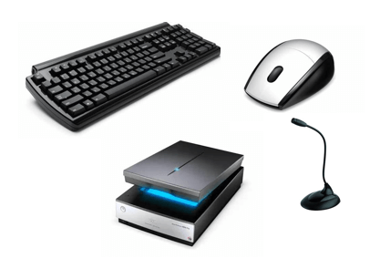
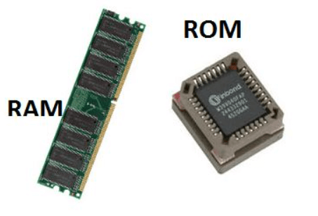
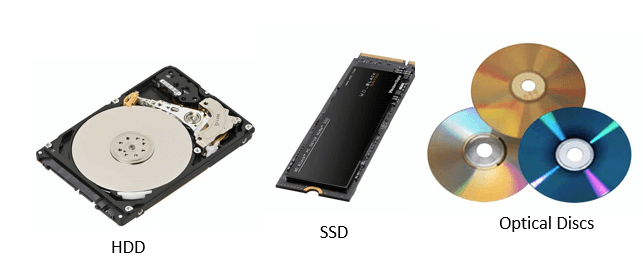
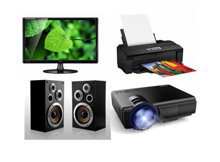

Computer components are the essential building parts of developing a functional computer system. The components that make up a computer are called computer components. The processor (CPU), memory, and input/output devices are every computer's three main building blocks. Initially computers were primarily used for numerical computations because any information can be numerically encoded. The ability of computers to interpret information for several purposes was quickly recognized.
There are 5 main computer components that are given below:
Input DevicesA computer system's input devices are important because they allow users to enter commands and data. Keyboards, mice, scanners, and microphones are numerous examples of input devices.
The keyboard is the most commonly utilized input device for inserting text and queries into a computer system.
Mice are another common input tool used to move the cursor on a computer screen.
Scanners are used for inputting physical documents or images into a computer system.
Microphones are used to input audio data into a system for computing. They can be used for various tasks, including recording audio for podcasts, participating in video conferences, and creating voice memos for later use.
A computer machine's "brain" is its central processing unit (CPU). It executes the calculations and commands required for functioning of the computer device. The CPU comprises some components: the control unit, the arithmetic logic unit (ALU), and registers.
The CPU's control unit is a crucial component. It is in charge of reading and decoding instructions from memory. The right part of the CPU receives and executes these instructions from the control unit.
The ALU, often known as the arithmetic logic unit, is another crucial CPU part. The ALU operates addition, subtraction, comparison calculations, and other logical and mathematical processes. These operations are carried out using binary logic, which limits operations to the 0 and 1 digits.
Registers are compact, high-speed data and instruction storage spaces within the CPU. They are utilized to store data that is being processed by the CPU momentarily. Registers are used to accelerate data processing because they are much faster than other forms of memory, such as RAM.
The CPU's clock speed is yet another crucial aspect that affects overall performance. The clock speed, measured in GHz (gigahertz), controls what number of commands the integral processing unit can process in a second.
Modern CPUs also have additional features like cache memory, virtualization capability, and a couple of cores in addition to the abovementioned components. A small, quick memory called a cache is used to store data and instructions that are utilized frequently. A single CPU may run numerous operating systems thanks to virtualization capability. The CPU can execute numerous tasks simultaneously thanks to multiple cores, enhancing its performance and multitasking capabilities.
The CPU has direct access to primary memory, sometimes referred to as random access memory (RAM). The data and instructions that are currently being processed are kept in primary memory. The data and instructions are accessed by the CPU from primary memory when a computer programme is running. The information is removed from primary memory once the programme is completed.
Primary memory is classified into two types: random access memory (RAM) and read-only memory (ROM).
RAM is the most common form of primary memory and is used to store data and instructions that the CPU wishes to access frequently. RAM is volatile, which means that its contents are lost when the computer is turned off. But RAM can be effortlessly and quickly written to and read from, making it a really perfect storage medium for temporary data and instructions.
ROM is a form of memory this is used to store data and instructions that don't change. ROM is non-volatile, which means that its contents aren't lost while the computer is turned off. ROM is used to keep firmware and the laptop's basic input/Output machine (BIOS), that are required for the computer to boot up and function well.
Other primary memory types, including cache memory, are sometimes used in computer systems. High-speed memory called cache saves information and instructions, which might be utilized often. By lowering the time, the CPU has to wait for data to be received from RAM or secondary storage devices, it is used to speed up the processing of records.
Secondary memory, also called auxiliary storage, is a type of computer memory that is used to store data and programs that aren't currently being utilized by the CPU. In contrast to primary memory, secondary memory is non-volatile, which means that its contents are not lost when the computer is turned off.
There are several types of secondary memory devices, such as hard disk drives (HDD), solid-state drives (SSD), optical disks (including CDs and DVDs), and USB flash drives. These devices have varying storage capacities, read and write speeds, and different capabilities that make them appropriate for different types of applications.
Hard disc drives are the most typical secondary memory tool in computing devices and laptop computers. They come in various sizes and speeds and keep data on magnetic discs. However, solid-state drives employ flash memory to store data and are typically quicker and more reliable despite being extra high-priced than HDDs.
Optical discs are a secondary memory that reads and writes data to discs using lasers. They are frequently used for data backup, distribution of software, and other digital information. Small, portable storage devices known as USB flash drives are connected to a computer's USB connection.
Users can store a lot of data and programmes in secondary memory, which is useful since it makes them accessible fast and readily when needed. Users can also protect crucial data from loss due to system crashes or other issues by using secondary memory devices as backups.
Output devices are hardware components of a computer system that are used to show or send data from the pc to the user or any other device. They enable customers to view and engage with the information and applications the computer is processing. Speakers, projectors, printers, and monitors are a few examples of output devices.
Monitors are the most frequently used output devices used to show data on a computer machine. They may be used to show photos, videos, and different forms of data and exist in various sizes and resolutions.
Printers are another form of output device this is used to print hard copies of papers and other styles of data. They include inkjet and laser printers and are available in various sizes and brands. While laser printers utilize toner to make speedy, high-volume prints, inkjet printers employ liquid ink to produce high-quality prints.
Speakers are used to output sound from a computer system. They can be connected externally or incorporated into the computer system. They enable users to interact with other forms of multimedia material, view videos, and listen to music.
Projectors are output device that displays huge images and videos on a screen or wall. They are frequently utilized in presentations and other occasions that call for a sizable display.
The operations of computer components are given below:
Computer components collaborate to carry out the numerous tasks necessary for a computer system to run. The following are some of the major operations carried out by computer components:
Inputting: It is the process of entering raw data, instructions and information into the computer. Keyboards, mice, and scanners are used as input devices to help with the process. These tools are used to enter information and instructions into a computer system. Data is transferred to the CPU for processing after inputting by an input device.
Processing: It is the process of converting the raw data into useful information. This process is performed by the CPU of the computer. It takes the raw data from storage, processes it and then sends back the processed data to storage. The CPU performs arithmetic computations, logical operations, and data transport processes.
Storing: The computer has primary memory and secondary storage to store data and instructions. It stores the data before sending it to CPU for processing and also stores the processed data before displaying it as output. The primary memory, sometimes called RAM, is where the CPU processes the data and instructions. Hard disc drives and solid-state drives, which serve as secondary memory, offer long-term storage for data and programmes that are not currently used.
Outputting: It is the process of presenting the processed data through output devices like monitor, printer and speakers. These devices display or produce the results of the processing performed by the CPU. The results are sent to an output device for display or printing after the CPU has finished processing the data and instructions.
Controlling: This operation is performed by the control unit that is part of CPU. The control unit ensures that all basic operations are executed in a right manner and sequence. The main circuit board connects all the parts of the computer. It also regulates the data flow between them, ensuring they function properly and connecting them all.